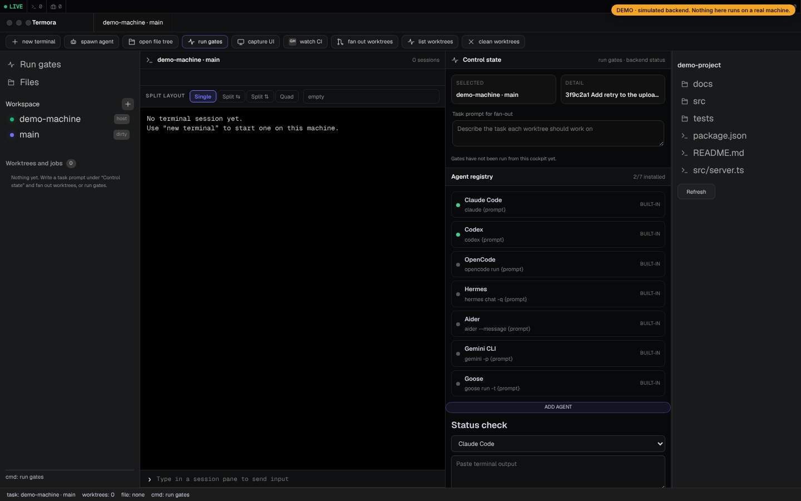
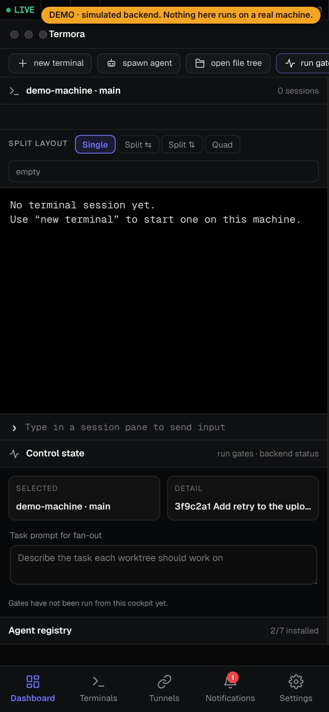
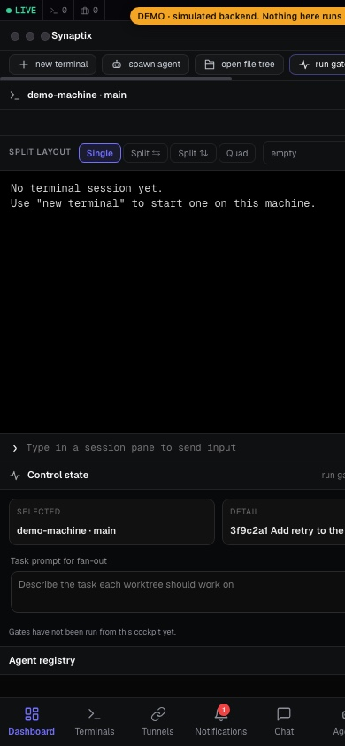

Early alpha · MIT · runs on your own machine
Your machine, in your hands.
Termora streams the real terminals and coding agents running on your own computer to a browser or your phone. Nothing runs in a cloud workspace. The shell is yours.


01 · What it does
Five things. Tested.
What exists today and has tests behind it. What does not exist yet is listed further down with the same weight.
Real terminals
Sessions are real PTYs streamed over WebSocket. tmux keeps them alive when it is installed. Create, rename, close, reconnect and resume them from any browser.
Pairing that checks the token
Scan a QR code or use a pairing token, which is exchanged for a JWT session token. Authentication endpoints are rate limited, and a revoked device stops working.
An agent registry
Claude Code, Codex, OpenCode, Hermes, Aider, Gemini CLI and Goose, plus your own. Commands run as argument lists, never through a shell, and launching them is off unless you set TERMORA_ENABLE_AGENT_SPAWN=1.
Worktree fan-out
Start the same task in several isolated git worktrees, one session each.
A desktop shell
An Electron app that bundles the agent and the interface into one package.
02 · Try it
Click it. Nothing is real.
The real interface, running against a simulated backend inside this page. No machine is connected and nothing you type leaves it. Open it full screen.
03 · How you use it
Four steps. No account.
Your phone never talks to a fake shell. It streams authenticated input and output to real terminal sessions on your computer.
- 1Run the agent
Start Termora on a Mac or Linux machine. It opens real PTY sessions and keeps them alive with tmux when tmux is installed.
- 2Pair a device
Scan the QR code from your phone, or open the address in a browser. A pairing token becomes a session token.
- 3Open terminals and agents
Start a shell, or launch a CLI agent you have installed, from the quick-action row. Split the screen into one, two or four panes.
- 4Read the state
Termora reads the last lines of each terminal and labels it: idle, running, editing, testing, waiting, failed or done. It is a guess from text.
04 · Scope
In scope. Out of scope.
Termora is a window onto a machine you already own. It does not replace the agents, host your code, or run anything for you in the cloud.
Covers
- Terminals on your machineShells and CLI agents, streamed to a browser or phone.
- One screen for many agentsA registry, a launcher and a state label shared by seven CLI agents and your own commands.
- Parallel workThe same task in several git worktrees, one session each.
- A phone-friendly terminalAn on-screen key row and quick commands, so a phone is enough to steer a session.
- Local, open sourceMIT license. No Termora account or server.
Does not cover
- Installing your agentsYou install Claude Code, Codex and the rest yourself. Termora checks they are on your PATH.
- SSH and SFTPConnecting to other machines is on the roadmap and not finished.
- A native mobile appA scaffold only. Use the browser or the installable web app.
- Signed installersThe desktop packages are unsigned and not published as a release.
- A hosted serviceIf the machine is off, there is nothing to connect to.
05 · Comfort
Built for a thumb.
- A key row for the keys phones lackESC, TAB, CTRL, ALT and the arrow keys, plus an on-screen keyboard.
- Quick commandsPlan, Diff, Commit and Reset sit above the keys, one tap each.
- Split layoutsSingle, two side by side, two stacked, or four panes.
- Install it as a web appAdd it to your home screen from the browser. It needs the machine to be reachable.

06 · Choices
Six choices. Each has a cost.
Other tools make other choices, such as a hosted workspace or a remote control for one specific agent. These are Termora's. What you get is in the middle column; what it costs you is in the last.
| Choice | What you get | What it costs |
|---|---|---|
| Your own machine | Your files, tools and logins stay where they already are. There is no workspace to rebuild. | The machine has to be on. If it sleeps or is switched off, there is nothing to connect to. |
| No account, no relay | Nothing to sign up for, and no Termora server that holds your sessions. | Reaching it from outside your network takes a public tunnel (ngrok or SSH) that you have to accept, or a network you set up yourself. |
| Many agents, one screen | Seven CLI agents and your own commands share one registry, one launcher and one state label. | The state label is a guess from terminal text. There is no deep integration with any agent, and you install the agents yourself. |
| Real terminals | A real PTY streamed to the browser, kept alive with tmux when it is installed. Anything that runs in a terminal runs here. | It works at terminal level. You see what the terminal shows, not a structured view of an agent's plan or diff. |
| Isolated worktrees | Fan one task out to several git worktrees, one session each, without them touching each other's files. | Git repositories only, and comparing the results is still your job. |
| Open source, self-hosted | MIT license. Read the code, change it, run it where you like. | It is an early alpha with rough edges, and the desktop packages are unsigned. |
This is not a claim that nobody else does these things. It describes what Termora does and what each choice costs you.
07 · Manifest
What works. What does not yet.
The desktop packages are built and started automatically on every change. They are unsigned, not notarized, and not published as a release, so there is nothing to download yet. A person has not yet installed and used them on a Mac or a Windows PC.
| Target | State | Notes |
|---|---|---|
| From sourcemacOS, Linux | Works | Node.js 20 or newer. This is the supported way to try Termora today. |
| LinuxAppImage | Built in CI · unsigned | Starts and serves the interface in an automated test. |
| macOSApple Silicon, dmg and zip | Built in CI · unsigned | Starts in an automated test. Not notarized, so macOS will warn you. No Intel build. |
| Windowsx64 installer | Built in CI · unsigned | Starts in an automated test. WSL support is not documented yet. |
| SSH and SFTP | Not finished | Connecting to other machines is on the roadmap. |
| Native mobile app | Scaffold | Use the browser or the installable web app instead. |
The full list, kept in step with the code, is in the status document and the roadmap.
08 · Run it
Four lines. From source.
Needs Node.js 20 or newer on macOS or Linux.
$ git clone https://github.com/royaluniondesign-sys/termora.git $ cd termora $ npm install $ TUNNEL=local npm run dev # prints a QR code and an address
- Open the address from your phone or another browser on the same network.
- Stop it with
Ctrl+C. - Windows: only the CI-built package exists for now.
09 · Questions
Asked. Answered plainly.
Is it free?
Termora is open source under the MIT license. There is no paid plan today.
Where does my data go?
Termora runs on your machine. There is no Termora server, account or sign-up, and the application code contains no analytics or telemetry. This page loads no scripts, fonts or trackers from other sites. There are two exceptions to "stays on your machine": the optional public tunnel described under Run it, and the optional AI chat. If you pick OpenAI or OpenRouter there, your messages and API key go through the agent to that provider; Ollama and the claude CLI stay on the machine.
Why no download button?
The desktop packages are unsigned, not notarized, and have not been published as a release. Until they are, running from source is the honest way to try it.
Which agents?
CLI agents that you have installed yourself: Claude Code, Codex, OpenCode, Hermes, Aider, Gemini CLI and Goose, or any command you add. Termora checks that the command exists on your PATH. It does not bundle or install them.
Windows?
A Windows x64 installer is built and started automatically, but nobody has used it on a real Windows machine yet. From-source support covers macOS and Linux.
A problem?
Open an issue on GitHub with your operating system, Node.js version and what you did.
Run it. Tell us what broke.
The most useful thing right now is someone using Termora for real work and reporting what gets in the way.